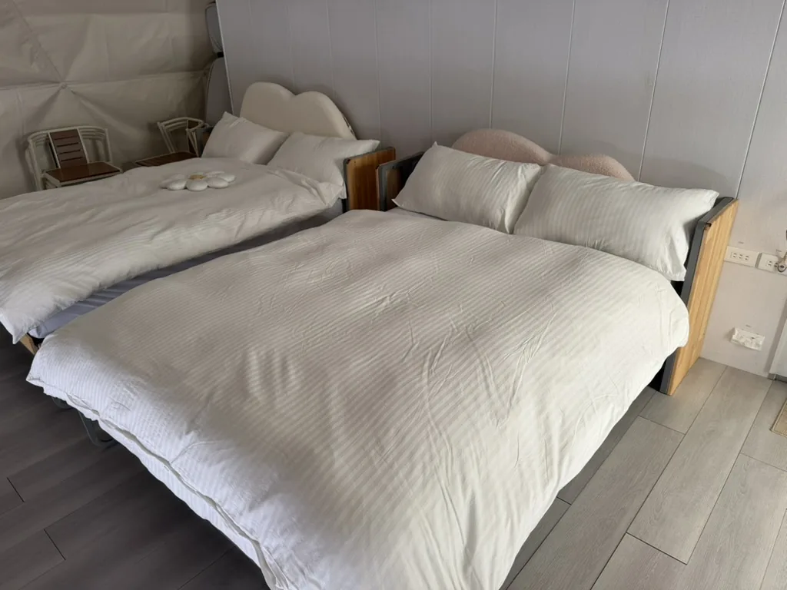
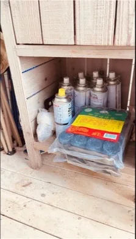
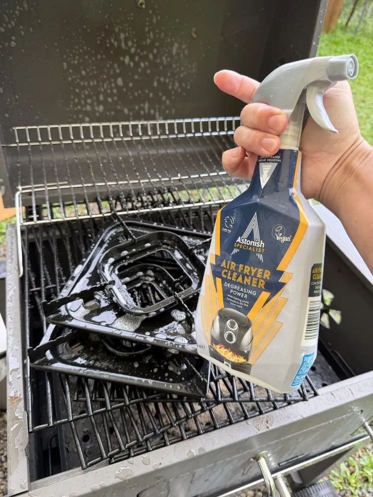
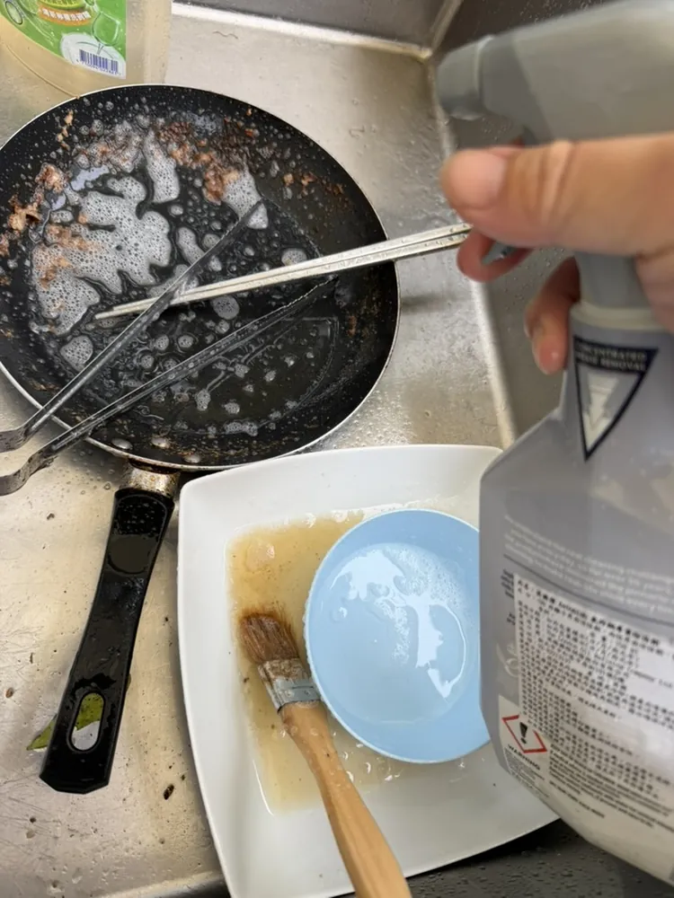
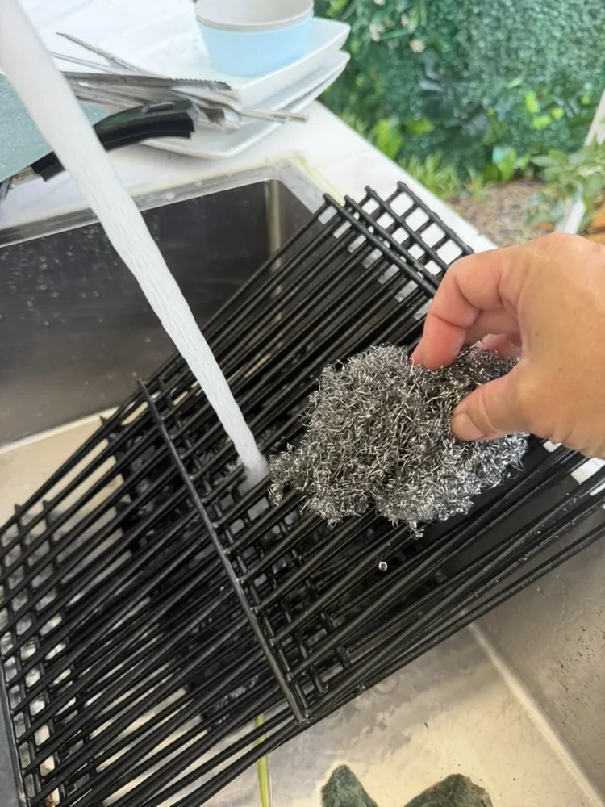

01
每次到場先做
先確認今天的整理範圍
- 先看房務訂房資訊，確認左、右帳篷入住人數、續住、包場或客廳使用等特殊狀況。
- 抵達後先用文字簡單回報今天處理的範圍，例如「左邊 4 人、右邊 6 人，以及第一、第二層草地」。
- 遇到連續住宿的帳篷，未交代前不要進入、不要更換寢具，也不要移動客人物品。
- 有不確定的房間、草地或設備狀況，先拍照並聯絡確認，再開始處理。
02
帳篷房務標準
帳篷、床鋪與寢具

- 更換使用過的床單、被套、枕頭套；拆下時正面朝外，不需要翻面。
- 每張床都要有乾淨床包或床單：彈簧床用床包，沙發床或地墊用無鬆緊帶床單。
- 棉被直接拉上去蓋滿床面，四周拉順；枕頭靠床頭、方向一致。
- 吸地或清潔帳篷地板，物品歸位；客廳使用的帳篷也要拍一張廣角完成照。
03
每次都要確認
第一、第二層草地與備品

- 收集垃圾時順手分類；一般垃圾用大垃圾袋集中後打死結，避免異味和動物翻找。
- 第一、第二層草地的廚房都要確認基本用品：木炭、木頭、瓦斯罐、衛生紙、卡式爐與打火機。
- 每個草地維持兩台卡式爐；至少有一個可用打火機。數量不足或故障，當下拍照回報。
- 餐具、砧板、油、鹽、醬油與黑胡椒依現場配置補齊；調味料保持乾淨、集中好找。
- 發現客人留下的物品，先判斷是否可能是下一組客人的用品；不是垃圾不要直接丟棄。
04
先噴、再處理
廚房、餐具與美式烤肉爐
烤爐、烤網、鍋子先噴去油劑，等待約 5 分鐘。等待期間先做其他整理，再回來清洗，會更快也更乾淨。



- 烤爐可用水管沖洗；烤網取下以鐵刷刷除焦垢，再沖淨。
- 鍋子、碗盤、餐具不留油膜或清潔劑；破掉的玻璃或危險碎片要小心處理並回報。
05
主動回報，方便追蹤
遺失物、損壞與特殊狀況
- 遺失物先拍照、原樣裝袋，放到倉庫保管；不要自行丟棄、拆散或猜測所有人。
- 發現設備損壞、裂痕、脫落、漏水或電源問題，先拍照與說明位置、數量、狀況；能確認是哪一組客人造成最好。
- 卡式爐、桌椅等需更換前，先拍多角度照片；若可行，同時拍正常物品作為對照。
- 螞蟻藥只放在草地指定位置，不放在帳篷旁；使用殺蟲或水煙前，依主管指示並注意安全。
- 洗衣機完成設定後蓋上帆布；髒寢具依目前洗衣流程處理，暫放時集中到綠色倉庫。